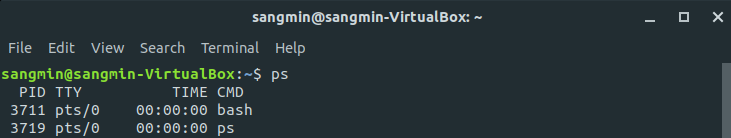
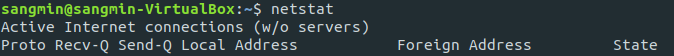

다중 명령어를 정리하는 이유
이번에 서버 구축 과제를 진행하며 다중 명령어를 종종 사용했는데, 어떠한 상황에서 어떠한 구분자를 사용해야하는지 궁금해서 찾아봤다. 이를 잘 활용하면 일련의 작업을 명령어 한 줄로 작성할 수 있어 효율적인 작업 수행이 가능하다.
Semicolon (;)
- 단순히 앞의 명령어부터 순차적으로 실행
- 명령어의 성공 여부 고려 X
$ cd sangmin; ls -al
Ampersand (&)
- 앞의 명령어는 백그라운드로 실행
- 즉시 뒤의 명령어 실행 (앞의 명령어 실행 완료 여부 고려 X)
뒤의 명령어가 즉시 실행되기 때문에 앞의 명령어 결과에 종속되서는 안된다. 예를 들면 다음과 같다.
$ mkdir sangmin & cd sangmin
mkdir은 새로운 디렉토리를 생성하라는 명령어이고, 뒤에 있는 cd는 해당 디렉토리로 이동하라는 명령어이다. cd 명령어를 통해 sangmin 이라는 디렉토리로 이동하기 위해서는 sangmin 디렉토리가 존재해야만 한다.
하지만 백그라운드에서 디렉토리를 생성하라는 명령이 수행 완료되기도 전에 이동하라는 명령이 먼저 실행되어 “No such file or directory” 메세지가 뜬다.
Vertical bar (|)
- 앞의 명령어의 실행 결과를 뒤의 명령어의 입력으로 넘기는 기능
- 파이프(pipe)라고 불리며
grep명령어와 묶어서 자주 사용
$ ps -ef | grep httpd
위의 명령어는 실행중인 프로세스 목록 중 httpd 라는 문자열이 포함된 라인만 출력해준다.
Double Ampersand (&&)
- 앞에 있는 명령어가 실패하면 뒤에 있는 명령어 실행 X
고로 앞의 명령어 성공 여부가 뒤의 명령어에 큰 영향을 줄 때 사용하면 유용하다.
$ sudo apt-get update && sudo apt-get upgrade
Double Vertical bar (||)
- 앞에 있는 명령어가 성공하면 뒤에 있는 명령어 실행 X
위의 &&와 반대라고 생각하면 된다. 앞의 명령어가 성공하지 못하면 뒤의 명령어가 실행되야 하는 경우에 유용하게 사용할 수 있다.
$ rmdir sangmin || sudo rmdir sangmin
rmdir 명령어로 디렉토리 삭제를 하지 못한 경우 뒤에 있는 명령어를 실행해 root 권한으로 지운다.
추가적인 명령어 정리
그 밖에 이번 과제에서 자주 사용한 명령어는 다음과 같다.
ps
- 현재 실행 중인 프로세스를 보여주는 명령어

기본적으로 아무런 옵션 없이 명령어를 이용하는 경우 위의 사진처럼 PID / TTY / TIME / CMD만 보여준다.
UID: 프로세스 소유자의 이름 (User ID)PID: 프로세스 식별 번호 (Process ID)PPID: 부모 프로세스의 IDTTY: 프로세스와 연결된 터미널TIME: 총 CPU 사용 시간CMD: 프로세스의 실행 명령행
-ef 옵션을 자주 사용했는데 이는 모든 프로세스(-e)를 full format(-f)으로 보여달라는 의미이다.
grep
- 입력으로 전달된 파일 내용 중 특정 문자열을 찾는 기능
$ ps -ef | grep httpd
위처럼 ps 명령어와 함께 요긴하게 사용했다. 현재 실행 중인 프로세스 중 httpd 문자열이 포함된 프로세스만을 보여준다.
grep은 단순히 문자열 일치 여부만을 검사하는 것은 아니다. 정규 표현식에 의한 패턴 매칭 방식을 사용해 복잡하고 다양한 방식으로 문자열을 찾는다고 한다. (참고 : https://recipes4dev.tistory.com/157)
netstat
- network statistics 의 줄임말
- 네트워크 연결 상태, 인터페이스 상태 등을 보여주는 명령어

Proto: 해당 통신이 사용하는 프로토콜Recv-Q/Send-Q: 해당 통신이 사용할 때의 소켓 사이즈 버퍼Recv-Q: recv()를 통해 처리받지 못한 데이터Send-Q: send()를 통해 보냈지만 아직 완전히 외부로 보내지지 않은 데이터
Local Address: 해당 통신에서 나가는 내 주소Foreign Address: 목적지에 해당하는 주소State: ESTABLISHED / LISTEN 과 같은 상태 정보
$ netstat -anp
위와 같은 옵션을 부여해 더 상세한 정보를 볼 수 있다.
-a: 모든 상태에 대한 소켓 정보-n: 도메인 명이 아닌 숫자로 된 IP 주소 표시-p: 어떤 프로세스에서 해당 통신을 사용하고 있는지 표시
curl
- client URL로 서버와 통신할 수 있는 명령어
REST application개발 테스트 시 유용하게 사용